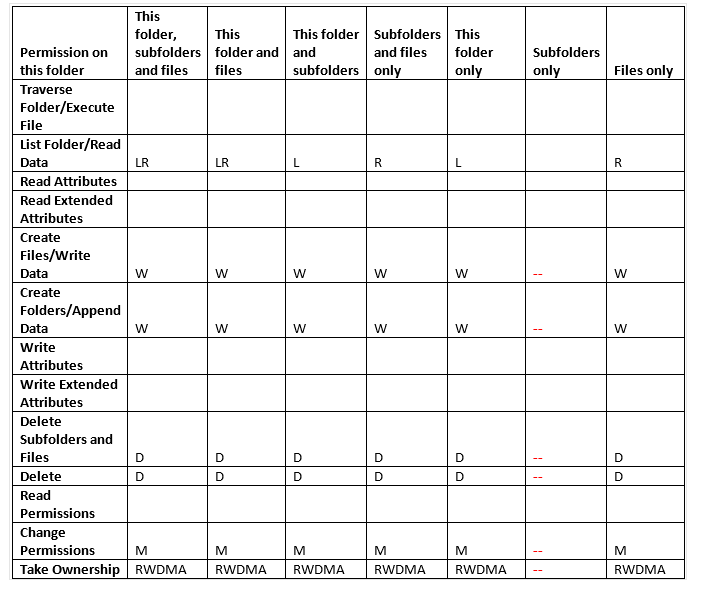

Summary: FSAA | Read & Execute Shown as List Only; FSAA was returning List rights for files.
Issue: Summary:
FSAA | Read & Execute Shown as List Only.
FSAA was returning List rights for files.
- Added new rights mapping section in FSAAConfig.xml for files.
- Upgraded FSAA so it will return Read rights instead of list rights for files.
FSAA will now return the following rights for folders

Issue:
YouTrack/Escalations
- SAFS-2062/14436
Customers
- Bank of America Corporation
Cumulative List of fixes included since Service Pack:
- SAFS-1637 FSAA subfolder depth not respected for nested shares.
- SAFS-755 FSAA/FSAC bulk import with unicode characters causes issues
- SAFS-1680 Update validation for FSAC Scan
- SAFS-1666 timeouts during proxy scan
- SAFS-1480 FSAA | FKCV ParentResourceID
- SAFS-994 FSAA SDD Rescan unimported hosts after x days setting not working
- SASP-1239 Error on SDD Bulk Import 'FSAA DLP DB files do not exist.' trying to process object of type FSAADifferential. Skipping object'
- SAFS-1850 FSAA Regression: GatesProxy table no longer being populated after pausing scans.
- SAFS-1583 12104 - Database schema is out of date
- SAFS-1581 FSAA should not send tier 2 dbs from SA console to proxy\target if files are identical
- SAFS-1628 Make Partial imports optional
- SAFS-1895 Error pausing scans
- SAFS-1793 Error 'Tier 2 databases no longer match Tier 1
- SAFS-1803 FS_Migration job fills up Transaction log and the job will not complete
- SAFS-2026 : Fixed file encoding for patterndefs.update file (reading as ANSI, file is encoded as UTF-8)
- SAFS-1996 FSAA: Big transaction log after first time bulk import
- SAFS-1834 FSAA | Hang during permission scan after verifying host IsNetApp.
Instructions: 1. Ensure that any currently running instances of StealthAUDIT are stopped.
2. Ensure that any currently running instances of the FSAA applet (StealthAUDITRPC.exe) are stopped.
3. Copy files from this hotfix into the DC folder onto your SA console, and into the Proxy install directory on any machines that are running the proxy service (A restart of the proxy service will be required).
Product: StealthAUDIT
Module: SA - DC - FSAA - Permissions
Versions: 7.2
Dev Ticket: SAFS-2062
Salesforce Article ID: 1501